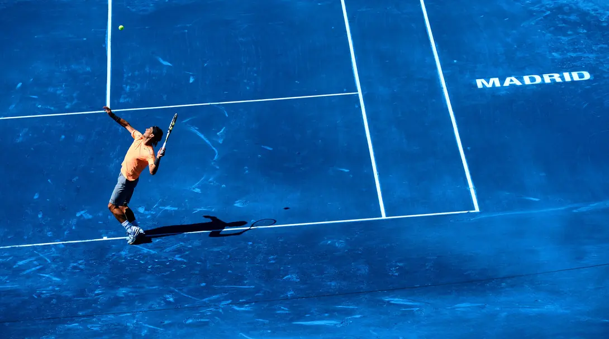
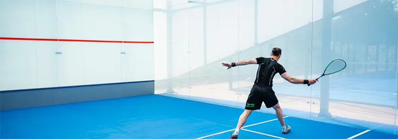

If You Lose A Squash Match, Can You Blame The Court?
I don’t ever recommend blaming a loss on external factors such as the court, but they can be a contributing factor. Read on to find out more.
This topic was inspired by a short Twitter exchange a few days ago. I posted a photo of Geoff Hunt practising with Ian Robinson on the Cannons all glass court, and I inadvertently wrote “I never played a competitive match on the court, but did sue it a number of times.” using “sue” instead of use”. Berkhamsted Squash wittily replied “Never blame the court when you lose Phillip” and Mainser followed with “Same for both players I say”. That final phrase is the one that got me thinking, and here we are.
At first glance the court condition is the same for both players, but that’s not to say that it affects players in the same way. The difference between squash courts is general not huge, but there can be differences. For example, I’ve played on a court that was right next to a swimming pool and the walls were ever so slightly damp. Others, have low ceilings, panels on the front wall, different materials as side walls, and the list goes on.
Let’s Start With A Tennis Example
Of course, tennis has three main surfaces: grass, clay and hard courts. There are others, carpet being one, but those three probably account for 95% of courts though. Clearly the difference between grass and clay is huge, but I’m not going to talk about that. I want to talk about the blue clay from the Madrid Open in 2012.
Personally, I think it looks great.
To summarise, they used clay that had had the brown colour removed and replaced with a blue dye. Unfortunately, this dye seriously affected the playing characteristics. It became slippery and difficult to play on. It heavily favoured serve and volley players.
So much so, that Roger Federer won the tournament for the first and only time. In fact, everybody in the semi-finals was considered an attacking player. Rafa Nadal and Novak Djokovic, the previous years finalists, both lost before the semi-finals. Watch a great explanation from Cult Tennis↗.
Back To Squash
I used the Madrid Open Blue Clay fiasco because the court was the “same for both players“, but clearly it favoured different types of players. Is the same true for squash? I believe so. If you play on a low court, you become accustomed that that height and can judge you lobs or high shots better than somebody who normally plays on a very high court. We often call this type of thing “home court advantage”. It also includes the support of other members, but really means that you are accustomed to that court.
If you have never played on an all-glass court, this could be a huge advantage for your opponent.
Other examples, might be a fast court favouring a volleyer, or a slow court favouring a slower deliberate player. or, and it’s never simple, the exact opposite of the situations I have just described. A fast court could favour the slower player. It really depends on the player.
What About At Tournaments?
If you play at a tournament whose location is new for both players, then things might be fairer. Both players might normally play on a slowish court and at the tournament it could be a fast court. Who adapts better has a better chance of winning.
In that case, the conditions really are the “same for both”. Which is why playing tournaments and inter-club matches is so good for your squash. Not only do you get to play against different players, you also get the chance to playing at new facilities, along with all the challenges that brings.
Final Thoughts
Never blame the court for your loss. In fact, don’t “blame” anything. Accept that factors influence the results, but more importantly YOUR reaction and response to those factors is the deciding factor. If you actively seek out new challenges in the form of different players and different courts, you will be taking positive steps to increase your adaptability.
Continue Reading
• Previous: What Is A Squash Exhibition Match?
• Next: What Does To “Hit The Ball Off The Back Wall” Mean In Squash?
• Random: Take A Chance!
• Popular: Things To Know Before You Have Coaching